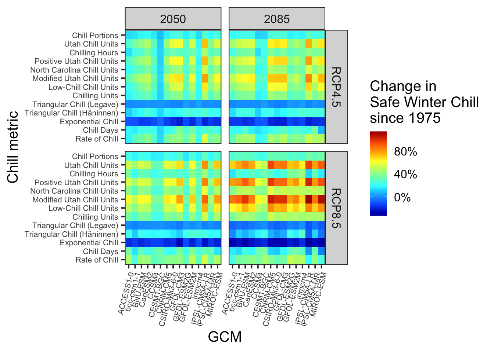
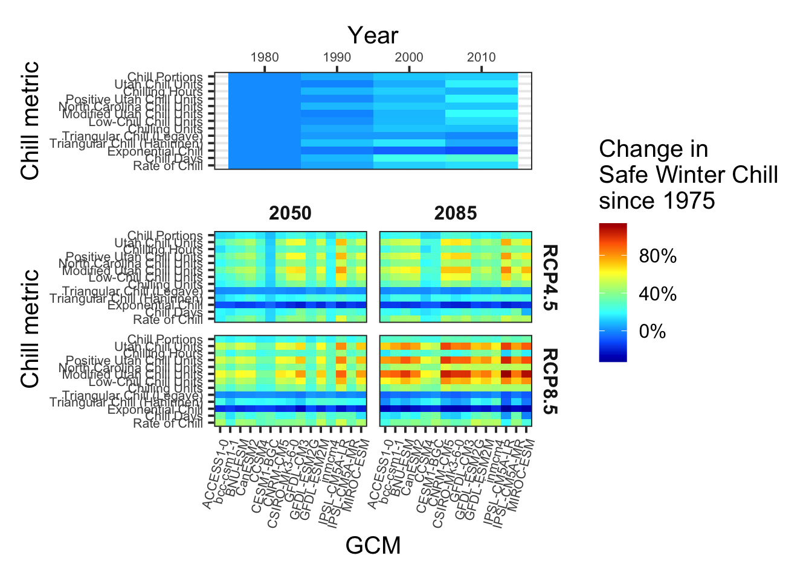
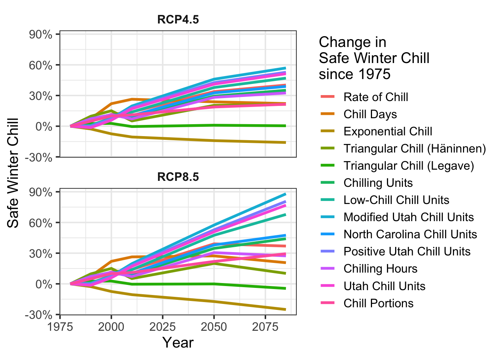
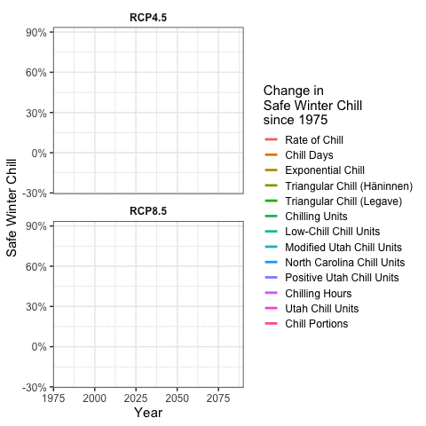

Chapter 14 Chill Model Comparison
14.1 Task 1
Perform a similar analysis for the location you’ve chosen for your exercises.
First, it should be clarified what the so-called Safe Winter Chill is. Essentially, it is the chill that can be expected with certainty in 90% of cases. In other words, in nine out of ten years, at least this amount of chill will be reached.
The data generated previously also contains information about the expected chill and can be well reduced to it. Different metrics are available for this. These models are compiled in the R package
dormancyRand can be retrieved via GitHub. Initially, some installations need to be performed. Lets do this now!
library(chillR)
library(devtools)
#install_github("EduardoFernandezC/dormancyR") # if it's installed, you don't need it again!
library(dormancyR)
library(tidyverse)
library(reshape2)
library(colorRamps)
library(kableExtra)
library(patchwork)
library(gganimate)Now we can load all models and metrics.
RCPs = c("rcp45","rcp85") # important for later
Times = c(2050,2085) # important for later
hourly_models =
list(
Chilling_units = chilling_units,
Low_chill = low_chill_model,
Modified_Utah = modified_utah_model,
North_Carolina = north_carolina_model,
Positive_Utah = positive_utah_model,
Chilling_Hours = Chilling_Hours,
Utah_Chill_Units = Utah_Model,
Chill_Portions = Dynamic_Model
)
daily_models =
list(
Rate_of_Chill = rate_of_chill,
Chill_Days = chill_days,
Exponential_Chill = exponential_chill,
Triangula_Chill_Haninnen = triangular_chill_1,
Triangular_Chill_Legave = triangular_chill_2
)
# gibt die Namen der beiden Listen zurück -> "hourly_models" und "daily_models"
metrics<-c(names(daily_models),names(hourly_models))
model_labels=c("Rate of Chill",
"Chill Days",
"Exponential Chill",
"Triangular Chill (Häninnen)",
"Triangular Chill (Legave)",
"Chilling Units",
"Low-Chill Chill Units",
"Modified Utah Chill Units",
"North Carolina Chill Units",
"Positive Utah Chill Units",
"Chilling Hours",
"Utah Chill Units",
"Chill Portions")
kable(data.frame(Metric=model_labels,'Function name'=metrics), caption = "Metrics and Models") %>%
kable_styling("striped", position = "left",font_size = 10)%>%
scroll_box(width = "100%")| Metric | Function.name |
|---|---|
| Rate of Chill | Rate_of_Chill |
| Chill Days | Chill_Days |
| Exponential Chill | Exponential_Chill |
| Triangular Chill (Häninnen) | Triangula_Chill_Haninnen |
| Triangular Chill (Legave) | Triangular_Chill_Legave |
| Chilling Units | Chilling_units |
| Low-Chill Chill Units | Low_chill |
| Modified Utah Chill Units | Modified_Utah |
| North Carolina Chill Units | North_Carolina |
| Positive Utah Chill Units | Positive_Utah |
| Chilling Hours | Chilling_Hours |
| Utah Chill Units | Utah_Chill_Units |
| Chill Portions | Chill_Portions |
Now all chill models should be applied to the future temperature scenarios in Leszno. The temperature data can be easily loaded for this.
Leszno_temps<-read_tab("weather_data/Leszno_weather_raw/Leszno_Sc_temps.csv")
Temps<-load_temperature_scenarios("weather_data/Leszno_weather_raw","Leszno_historic")After the temperature data has been loaded and stored in the variables
Leszno_tempsandTemps, the various chill models can be applied to this data.
Start_JDay = 305
End_JDay = 59
daily_models_past_scenarios =
tempResponse_list_daily(Temps,
Start_JDay = Start_JDay,
End_JDay = End_JDay,
models = daily_models)
daily_models_past_scenarios =
lapply(daily_models_past_scenarios,
function(x)
x[which(x$Perc_complete > 90), ])
# hourly_models_past_scenarios =
# tempResponse_daily_list(
# Temps,
# latitude = 51.39,
# Start_JDay = Start_JDay,
# End_JDay = End_JDay,
# models = hourly_models,
# misstolerance = 10
# )
#save_temperature_scenarios(hourly_models_past_scenarios,"dormancyR","hourly_models_past_scenarios")
hourly_models_past_scenarios = load_temperature_scenarios("dormancyR","hourly_models_past_scenarios")
past_scenarios = daily_models_past_scenarios
past_scenarios =
lapply(names(past_scenarios),
function(x)
cbind(past_scenarios[[x]],
hourly_models_past_scenarios[[x]][, names(hourly_models)]))
names(past_scenarios) = names(daily_models_past_scenarios)
daily_models_observed =
tempResponse_daily(
Leszno_temps,
Start_JDay = Start_JDay,
End_JDay = End_JDay,
models = daily_models
)
daily_models_observed =
daily_models_observed[which(daily_models_observed$Perc_complete > 90), ]
# hourly_models_observed =
# tempResponse_daily_list(
# Leszno_temps,
# latitude = 51.39,
# Start_JDay = Start_JDay,
# End_JDay = End_JDay,
# models = hourly_models,
# misstolerance = 10
# )
#save_temperature_scenarios(hourly_models_observed,"dormancyR_hourly_models","hourly_models_observed")
hourly_models_observed = load_temperature_scenarios("dormancyR_hourly_models","hourly_models_observed")
# past_observed =
# cbind(daily_models_observed,
# hourly_models_observed[[1]][, names(hourly_models)])
# save_temperature_scenarios(past_scenarios,
# "weather_data/Leszno_weather_raw/chill",
# "Leszno_multichill_historic")
# write.csv(past_observed,
# "weather_data/Leszno_weather_raw/chill/Leszno_multichill_observed.csv",
# row.names=FALSE)
past_observed = read.csv("weather_data/Leszno_weather_raw/chill/Leszno_multichill_observed.csv")RCPs<-c("rcp45","rcp85")
Times<-c(2050,2085)
# for(RCP in RCPs)
# for(Time in Times)
# {
# Temps<-load_temperature_scenarios(
# "weather_data/Leszno_weather_raw/Leszno_/",
# paste0("Leszno_",Time,"_",RCP))
#
# daily_models_future_scenarios<-tempResponse_list_daily(
# Temps,
# Start_JDay = Start_JDay,
# End_JDay = End_JDay,
# models=daily_models)
# daily_models_future_scenarios<-lapply(
# daily_models_future_scenarios,
# function(x) x[which(x$Perc_complete>90),])
# hourly_models_future_scenarios<-
# tempResponse_daily_list(
# Temps,
# latitude=51.39,
# Start_JDay = Start_JDay,
# End_JDay = End_JDay,
# models=hourly_models,
# misstolerance = 10)
#
# future_scenarios<-daily_models_future_scenarios
# future_scenarios<-lapply(
# names(future_scenarios),
# function(x)
# cbind(future_scenarios[[x]],
# hourly_models_future_scenarios[[x]][,names(hourly_models)]))
# names(future_scenarios)<-names(daily_models_future_scenarios)
#
# chill<-future_scenarios
# save_temperature_scenarios(
# chill,
# "weather_data/Leszno_weather_raw/chill",
# paste0("Leszno_multichill_",Time,"_",RCP))
# }
chill_past_scenarios =
load_temperature_scenarios(
"weather_data/Leszno_weather_raw/chill",
"Leszno_multichill_historic")
chill_observed =
read_tab("weather_data/Leszno_weather_raw/chill/Leszno_multichill_observed.csv")
chills =
make_climate_scenario(chill_past_scenarios,
caption = "Historic",
historic_data = chill_observed,
time_series = TRUE)
for(RCP in RCPs)
for(Time in Times)
{
chill<-load_temperature_scenarios(
"weather_data/Leszno_weather_raw/chill/",
paste0("Leszno_multichill_",Time,"_",RCP))
if(RCP=="rcp45") RCPcaption <- "RCP4.5"
if(RCP=="rcp85") RCPcaption <- "RCP8.5"
if(Time=="2050") Time_caption <- "2050"
if(Time=="2085") Time_caption <- "2085"
chills <-make_climate_scenario(chill,
caption =c(RCPcaption,Time_caption),
add_to = chills)
}
for(i in 1:length(chills))
{ch<-chills[[i]]
if(ch$caption[1]=="Historic")
{GCMs<-rep("none",length(names(ch$data)))
RCPs<-rep("none",length(names(ch$data)))
Years<-as.numeric(ch$labels)
Scenario<-rep("Historic",length(names(ch$data)))} else
{GCMs<-names(ch$data)
RCPs<-rep(ch$caption[1],length(names(ch$data)))
Years<-rep(as.numeric(ch$caption[2]),length(names(ch$data)))
Scenario<-rep("Future",length(names(ch$data)))}
for(nam in names(ch$data))
{for(met in metrics)
{temp_res<-data.frame(Metric=met,
GCM=GCMs[which(nam==names(ch$data))],
RCP=RCPs[which(nam==names(ch$data))],
Year=Years[which(nam==names(ch$data))],
Result=quantile(ch$data[[nam]][,met],0.1),
Scenario=Scenario[which(nam==names(ch$data))])
if(i==1&nam==names(ch$data)[1]&met==metrics[1])
results<-temp_res else
results<-rbind(results,temp_res)
}}}
for(met in metrics)
results[which(results$Metric==met),"SWC"]<-
results[which(results$Metric==met),"Result"]/
results[which(results$Metric==met&results$Year==1980),"Result"]-1
rng = range(results$SWC)14.2 Task 2
Make a heat map illustrating past and future changes in Safe Winter Chill, relative to a past scenario, for the 13 chill models used here
p_future =
ggplot(results[which(!results$GCM=="none"),],
aes(GCM, y=factor(Metric, levels=metrics),
fill = SWC)) +
geom_tile()+
facet_grid(RCP ~ Year)+
theme_bw(base_size = 15) +
theme(axis.text = element_text(size=8))+
scale_fill_gradientn(colours=matlab.like(15),
labels = scales::percent,
limits=rng)+
theme(axis.text.x = element_text(angle = 75, hjust = 1, vjust = 1)) +
labs(fill = "Change in\nSafe Winter Chill\nsince 1975") +
scale_y_discrete(labels=model_labels) +
ylab("Chill metric")
p_future
p_past =
ggplot(results[which(results$GCM=="none"),],
aes(Year, y=factor(Metric, levels=metrics),
fill = SWC)) +
geom_tile()+
theme_bw(base_size = 15) +
theme(axis.text = element_text(size=8))+
scale_fill_gradientn(colours=matlab.like(15),
labels = scales::percent,
limits=rng)+
scale_x_continuous(position = "top")+
labs(fill = "Change in\nSafe Winter Chill\nsince 1975") +
scale_y_discrete(labels=model_labels) +
ylab("Chill metric")
chill_comp_plot =
(p_past +
p_future +
plot_layout(guides = "collect",nrow=2, heights=c(1,2))) &
theme(legend.position = "right",strip.background = element_blank(),
strip.text = element_text(face = "bold"))
chill_comp_plot
14.3 Task 3
Produce an animated line plot of your results (summarizing Safe Winter Chill across all the GCMs).
hist_results = results[which(results$GCM=="none"),]
hist_results$RCP = "RCP4.5"
hist_results_2 = hist_results
hist_results_2$RCP = "RCP8.5"
hist_results = rbind(hist_results,hist_results_2)
future_results = results[which(!results$GCM=="none"),]
GCM_aggregate =
aggregate(
future_results$SWC,
by=list(future_results$Metric,future_results$RCP,future_results$Year),
FUN=mean)
colnames(GCM_aggregate) = c("Metric","RCP","Year","SWC")
RCP_Time_series = rbind(hist_results[,c("Metric","RCP","Year","SWC")],
GCM_aggregate)
chill_change_plot =
ggplot(data=RCP_Time_series,
aes(x=Year,y=SWC,col=factor(Metric,levels=metrics))) +
geom_line(lwd=1.3) +
facet_wrap(~RCP,nrow=2) +
theme_bw(base_size=15) +
labs(col = "Change in\nSafe Winter Chill\nsince 1975") +
scale_color_discrete(labels=model_labels) +
scale_y_continuous(labels = scales::percent) +
theme(strip.background = element_blank(),
strip.text = element_text(face = "bold")) +
ylab("Safe Winter Chill")
chill_change_plot
# Create Animation
p = chill_change_plot + transition_reveal(Year)
#animate(p, renderer = gifski_renderer())
#anim_save("Result/chill_comparison_animation.gif", animation = last_animation())
library(magick)
animation = image_read("Result/chill_comparison_animation.gif")
image_animate(animation)